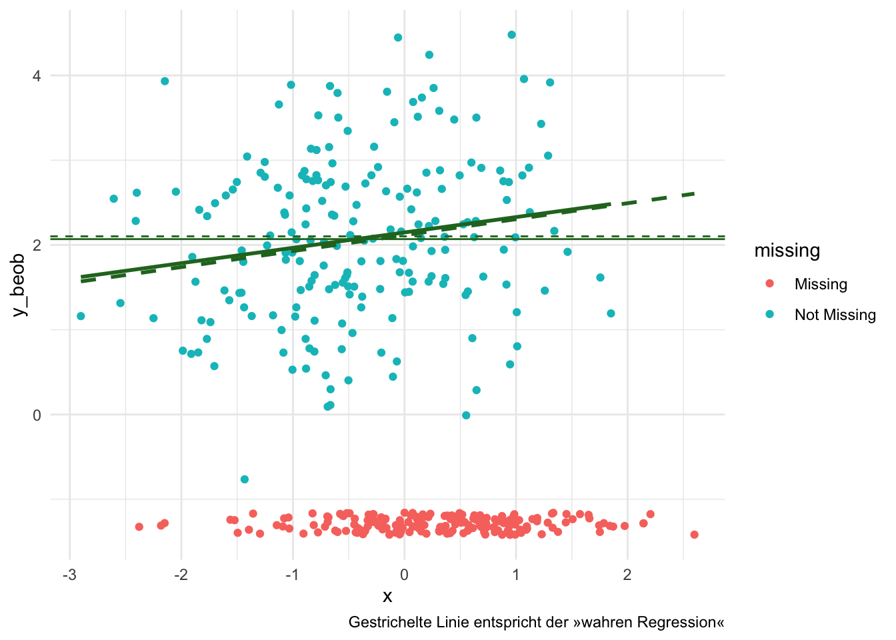

Das zentrale Problem einer Mean oder Single Imputation ist, dass bei anschließender Modellschätzung die imputierten Daten nicht von den beobachteten Daten unterschieden werden können. Dadurch können Parameter und deren Unsicherheit nicht korrekt geschätzt werden. Bayesian Imputation during Model Fitting (BIMF) ist eine Methode, die dieses Problem adressiert, indem sie die fehlenden Werte als zusätzliche Parameter in das Modell integriert für diese Priors anniment und anhand der Daten Posteriors schätzt. Im Posterior kann die Unsicherheit der fehlenden Werte formalisiert und deren Einfluss auf die Modellparameter bei anschließender Schätzung berücksichtigt werden.
Umsetzung in {brms}
WarnungAchtung: stan-Installation notwendig
In den folgenden Beispielen wird das R-Paket {brms} verwendet. Dieses Paket basiert auf der probabilistischen Programmiersprache stan, die für die Durchführung von Bayesianischen Analysen notwendig ist. Die Installation von stan kann je nach Betriebssystem und R-Version komplex sein. Es wird empfohlen, diese Installationsanleitung zu befolgen.
In {brms} kann BIMF mit der mi()-Funktion implementiert werden, die es ermöglicht, fehlende Werte als zusätzliche Parameter in das Modell zu integrieren. Hier ist ein einfaches Beispiel, wie dies umgesetzt werden kann:
library(brms)
Loading required package: Rcpp
Loading 'brms' package (version 2.23.0). Useful instructions
can be found by typing help('brms'). A more detailed introduction
to the package is available through vignette('brms_overview').
Attaching package: 'brms'
The following object is masked from 'package:stats':
ar
── Conflicts ────────────────────────────────────────── tidyverse_conflicts() ──
✖ dplyr::filter() masks stats::filter()
✖ dplyr::lag() masks stats::lag()
ℹ Use the conflicted package (<http://conflicted.r-lib.org/>) to force all conflicts to become errors
library(naniar)set.seed(1895)N <-400data_mar <-tibble(x =rnorm(N),# 0.5 ist die Stärke des Zusammenhangs zwischen x und y_compy_comp =2+0.1* x +rnorm(N),# Die Wahrscheinlichkeit, dass y_beob fehlt, hängt von x abr =rbinom(N, 1, prob =plogis(1* x)),y_beob =ifelse(r ==0, y_comp, NA),y_mis =ifelse(r ==1, y_comp, NA) )# Plot der randverteilungen von beobachteten und fehlenden Wertenggplot(data_mar, aes(x = x, y = y_beob)) +geom_miss_point() +# Regression der beobachteten Wertegeom_smooth(method ="lm", se =FALSE, color ="#267326") +# Regression aller Werte (inkl. fehlende Werte, die hier als NA dargestellt werden)geom_smooth(aes(y = y_comp),method ="lm",se =FALSE,color ="#267326",linetype ="dashed" ) +# mean(y_comp)geom_hline(yintercept =mean(data_mar$y_comp, na.rm =TRUE),linetype ="dashed",color ="#267326" ) +# mean(y_beob)geom_hline(yintercept =mean(data_mar$y_beob, na.rm =TRUE),color ="#267326" ) +labs(caption ="Gestrichelte Linie entspricht der »wahren Regression«") +theme_minimal()
`geom_smooth()` using formula = 'y ~ x'
Warning: Removed 196 rows containing non-finite outside the scale range
(`stat_smooth()`).
`geom_smooth()` using formula = 'y ~ x'

brm(y_comp ~ x, data = data_mar, silent =2, refresh =0)
Family: gaussian
Links: mu = identity
Formula: y_comp ~ x
Data: data_mar (Number of observations: 400)
Draws: 4 chains, each with iter = 2000; warmup = 1000; thin = 1;
total post-warmup draws = 4000
Regression Coefficients:
Estimate Est.Error l-95% CI u-95% CI Rhat Bulk_ESS Tail_ESS
Intercept 2.11 0.05 2.02 2.21 1.00 4468 2860
x 0.19 0.05 0.09 0.29 1.00 3817 2713
Further Distributional Parameters:
Estimate Est.Error l-95% CI u-95% CI Rhat Bulk_ESS Tail_ESS
sigma 0.97 0.04 0.91 1.04 1.00 3767 2752
Draws were sampled using sampling(NUTS). For each parameter, Bulk_ESS
and Tail_ESS are effective sample size measures, and Rhat is the potential
scale reduction factor on split chains (at convergence, Rhat = 1).
brm(y_beob ~ x, data = data_mar, silent =2, refresh =0)
Warning: Rows containing NAs were excluded from the model.
Family: gaussian
Links: mu = identity
Formula: y_beob ~ x
Data: data_mar (Number of observations: 204)
Draws: 4 chains, each with iter = 2000; warmup = 1000; thin = 1;
total post-warmup draws = 4000
Regression Coefficients:
Estimate Est.Error l-95% CI u-95% CI Rhat Bulk_ESS Tail_ESS
Intercept 2.15 0.08 2.00 2.29 1.00 3867 2841
x 0.18 0.07 0.04 0.32 1.00 4067 2683
Further Distributional Parameters:
Estimate Est.Error l-95% CI u-95% CI Rhat Bulk_ESS Tail_ESS
sigma 0.96 0.05 0.87 1.06 1.00 3732 2985
Draws were sampled using sampling(NUTS). For each parameter, Bulk_ESS
and Tail_ESS are effective sample size measures, and Rhat is the potential
scale reduction factor on split chains (at convergence, Rhat = 1).
Family: gaussian
Links: mu = identity
Formula: y_beob | mi() ~ x
Data: data_mar (Number of observations: 400)
Draws: 4 chains, each with iter = 2000; warmup = 1000; thin = 1;
total post-warmup draws = 4000
Regression Coefficients:
Estimate Est.Error l-95% CI u-95% CI Rhat Bulk_ESS Tail_ESS
Intercept 2.15 0.07 2.00 2.29 1.00 2929 3109
x 0.18 0.07 0.03 0.33 1.00 2893 3003
Further Distributional Parameters:
Estimate Est.Error l-95% CI u-95% CI Rhat Bulk_ESS Tail_ESS
sigma 0.96 0.05 0.87 1.06 1.00 1974 2386
Draws were sampled using sampling(NUTS). For each parameter, Bulk_ESS
and Tail_ESS are effective sample size measures, and Rhat is the potential
scale reduction factor on split chains (at convergence, Rhat = 1).
![]()